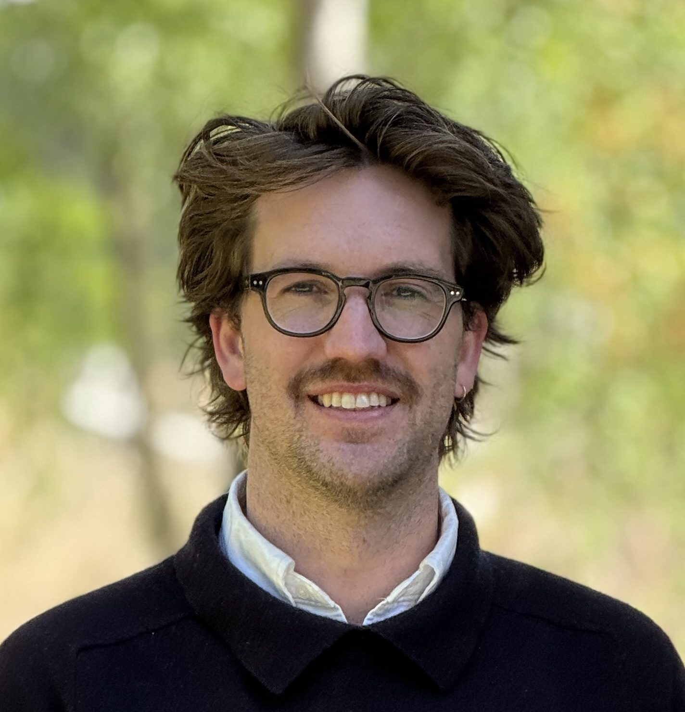
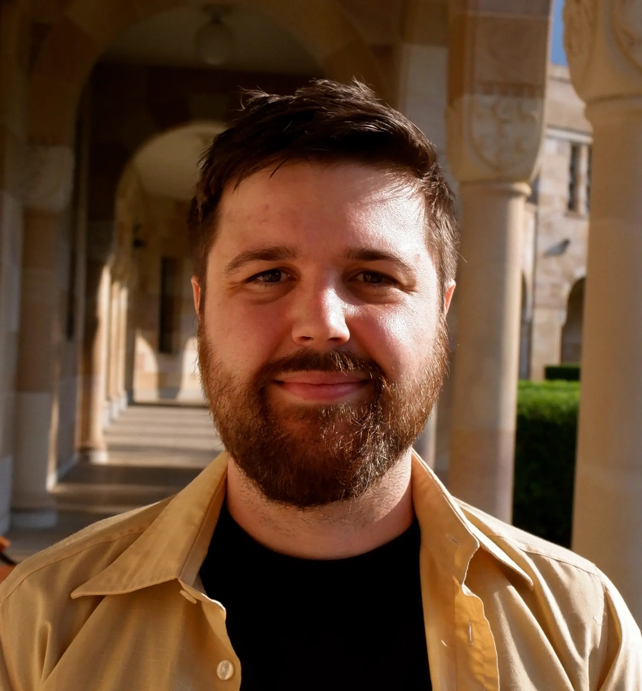
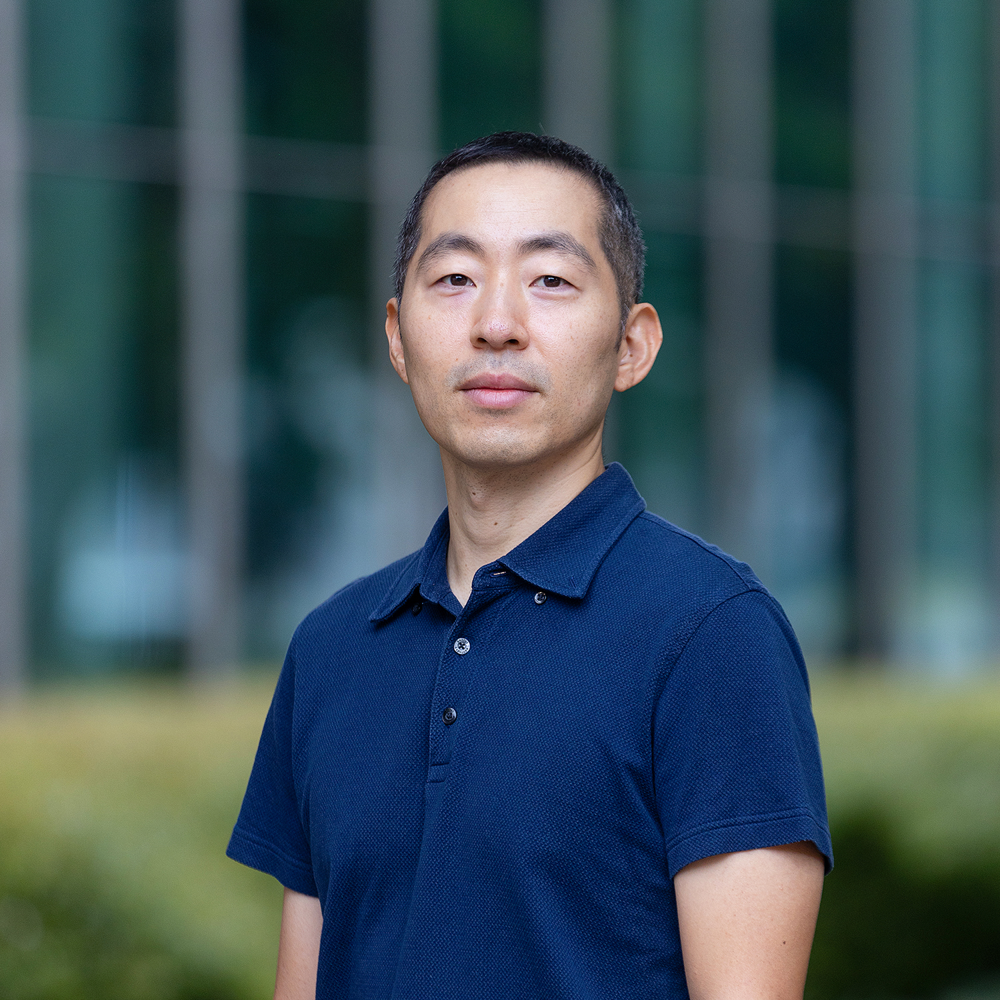
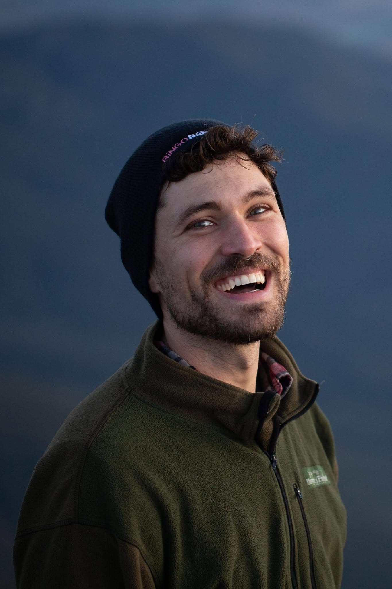

Researchers from across Australia and Aotearoa New Zealand, volunteering their time to build a stronger environmental psychology community.




Be the first to hear about upcoming seminars, pre-conference announcements, and network news.